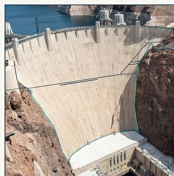
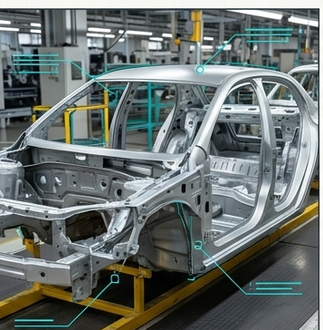
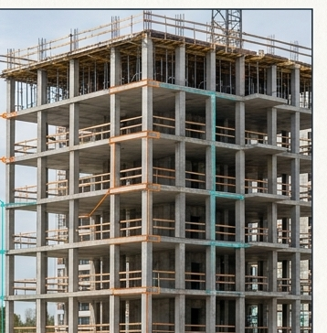
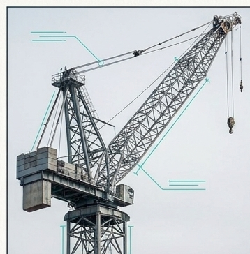
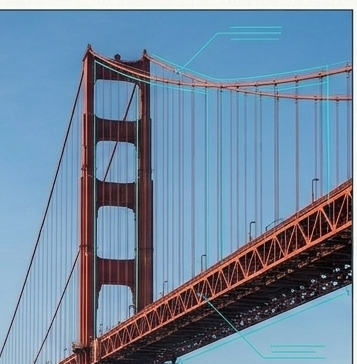
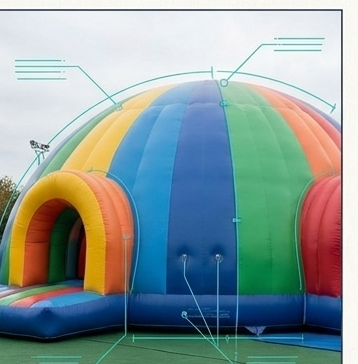
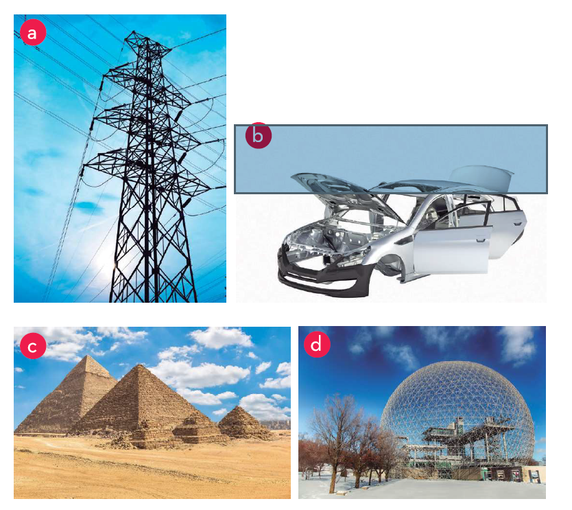

1 Elements d'una estructura
Relaciona cada descripció amb l'element que li correspon.

- aLa part que reparteix el pes de l'edifici cap al terra
- bCable que estira des de dalt d'un pilar cap al tauler d'un pont
- cForma corba que cobreix un espai i reparteix l'esforç cap als laterals
2 Cada element, un esforç
Quin esforç pateix principalment cada element en aquesta situació?
- aUn pilar que aguanta un pes de dalt
- bUna biga amb algú caminant-hi a sobre
3 Els esforços d'un pont
Un cotxe travessa el pont pel tauler (la línia de baix, A–B–D). Fes clic a cada barra, o tria-ho a la llista, per dir si s'estira (tracció) o s'escurça (compressió). Les fletxes del dibuix et mostren el que has triat.
Pista: pensa en una regla que es corba quan hi recolzes un pes al mig. Què li passa a la cara de dalt? I a la de baix?
3b Explica el pont
Torna a mirar el pont de l'activitat 3 i respon amb les teves paraules.
4 Propietats
Quina propietat li falta a cada estructura?
- aUna cadira de tres potes es belluga i acaba bolcant
- bUna prestatgeria es corba molt quan hi poses llibres, tot i no trencar-se
- cUn pont cedeix i es trenca amb el pes d'un camió
5 Tipus segons la conformació
De quin tipus és cada estructura de la foto?
-

-

-

-

-

-

6 Cada estructura, el seu tipus
Primer, mira l'exemple resolt. Després relaciona cada estructura amb el tipus al qual pertany.

- aCarretó de supermercat
- bEdifici d'habitatges
- cGrua de construcció
- dPont amb tirants
- ePiràmide
- fAqüeducte romà
- gCastell inflable
- hCúpula de vidre del Museu Dalí
7 Factors del disseny
Quins són els tres factors principals que cal tenir en compte a l'hora de dissenyar i construir una estructura? Marca'n tres.